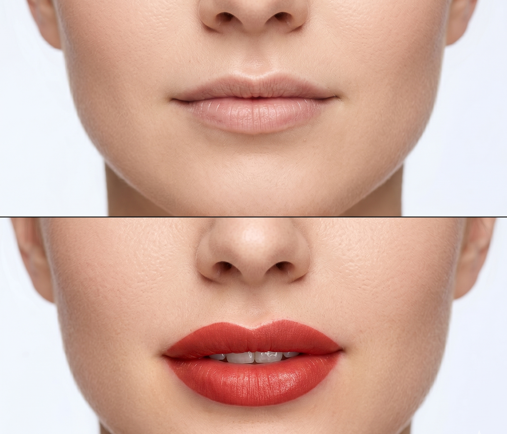

Akvarelové rty

Vše, co potřebujete vědět o Akvarelových rtech
Akvarelové rty (známé také jako lip blush) jsou vysoce populární technikou permanentního make-upu, která vašim rtům dodá zdravý barevný nádech, opticky je sjednotí a mírně zvětší. Zapomeňte na ostré, nepřirozené kontury z minulosti – pomocí této techniky vytvářím velmi plynulý přechod barvy, který připomíná efekt čerstvě naneseného tónovacího balzámu. Vaše rty budou vypadat plnější a svěžejší.
Ve svém studiu si zakládám na preciznosti a individuálním přístupu. Mým cílem je podtrhnout vaši přirozenou krásu, vyrovnat případné asymetrie a dodat vám pocit sebevědomí. Rád vás celým procesem provedu, zajistím váš maximální komfort a postarám se o to, abyste odcházeli s dokonalým úsměvem.
Co vás čeká během návštěvy:
- Konzultace a výběr odstínu:Společně vybereme barvu, která ideálně ladí s podtónem vaší pleti a vaším osobním stylem.
- Architektura rtů:Precizně vyměřím a předkreslím tvar tak, abychom dosáhli dokonalé symetrie a plnosti.
- Znecitlivění a aplikace:Po aplikaci lokálního anestetika pro váš maximální komfort šetrně vpravím pigment do svrchní vrstvy rtů.
- Péče po zákroku:Detailně vám vysvětlím, jak o rty během hojení pečovat a hydratovat je, aby barva krásně sedla.
Jak dlouho vydrží výsledek a jak probíhá hojení?
Krásně zbarvené a definované rty vám po této proceduře vydrží zpravidla 1,5 až 3 roky. Životnost pigmentu závisí na řadě faktorů, jako je váš metabolismus, typ pleti, životní styl nebo frekvence vystavování slunečnímu záření bez UV ochrany.
Je naprosto normální, že bezprostředně po zákroku se barva jeví až o 30–50 % tmavší a sytější, než jaký bude finální výsledek. Nemusíte se toho lekat. Během prvního týdne dojde k jemnému loupání pokožky a pigment postupně zesvětlá do požadovaného, přirozeného "akvarelového" stínu.
K dokonalému zafixování barvy a doladění detailů je nezbytná první korekce, kterou provádím po 6 až 8 týdnech od prvního sezení. Během ní doplním místa, kde se pigment mohl zahojit světleji.